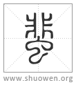

蜚
𧕿或从虫。
清代 段玉裁《說文解字注》
- 臭蟲。負蠜也。
按臭蟲下有奪字。當云臭蟲也、一曰負蠜也。畫然二說。如虫部蝝下之竝載三說也。春秋莊二十九年。秋、有蜚。左氏傳曰。爲災也。公羊傳曰。紀異也。穀梁傳曰。一有一亡曰有。漢五行志。劉歆以爲負蠜也。性不食穀。食穀爲災。按子駿葢演左氏說也。劉向以爲蜚色靑。近靑眚。非中國所有。南越盛暑。男女同川澤。淫風所生。爲蟲臭惡。是時嚴公取齊淫女爲夫人。旣入。淫於兩叔。故蜚至。按子政葢演穀梁之說。而何休、范𡩋皆從之也。許列臭蟲於先。而負蠜次之。許意子政說長也。負蠜與蠜畫然二物。釋蟲曰。？螽、蠜也。毛傳同。許同。此一物也。釋蟲曰。草螽、今爾雅作蟲譌負蠜也。毛傳則云草蟲、常羊也。常羊卽負蠜。鄭箋云。艸蟲鳴則阜螽躍而從之。是以謂之負蠜也。劉子駿及許之負蠜卽艸蟲也。卽常羊也。左氏之所以釋蜚也。至於臭蟲生南越而有於中國。子政之說則然。亦如有蜮、有鸜鵒來巢皆本非所有。公穀之所以釋蜚也。釋蟲曰。蜚、蠦蜰。郭云。𦤀蟲、負盤也。攷本艸經蜚蠊。注家云。辛辣而臭。漢中人食之。一名盧蜰。一名負盤。郭注亦謂此。而許虫部蜰下但言盧蜰。不言蜚也。似許不以盧蜰與臭蟲爲一物。本艸之蜚蠊非必淫气所生。劉向所以說經者、又未必蜚蠊也。故所云盧蜰者、葢本艸之蜚蠊。此云臭蟲者、未必爲本艸之蜚蠊也。蠜二字尢不當牽混。
- 从蟲。非聲。
房未切。十五部。
- 𧕿或从虫。
今春秋三經皆如此作。古書多叚爲飛字。